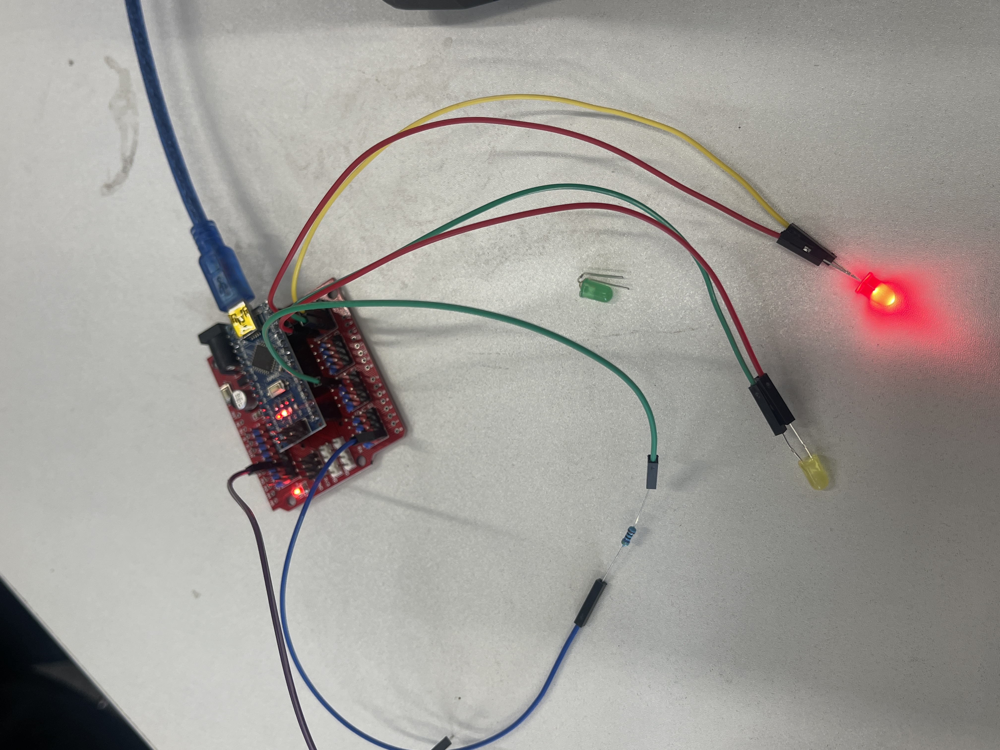
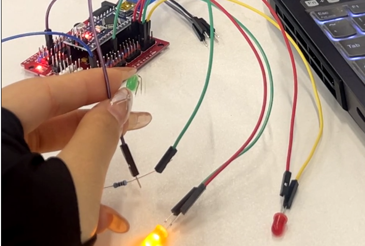
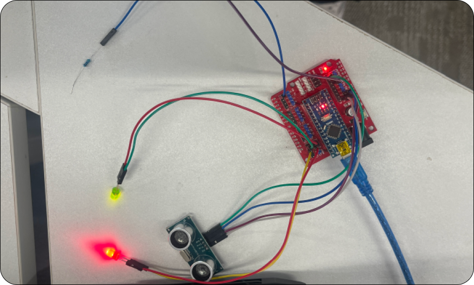
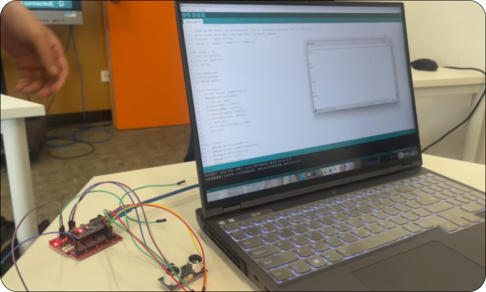
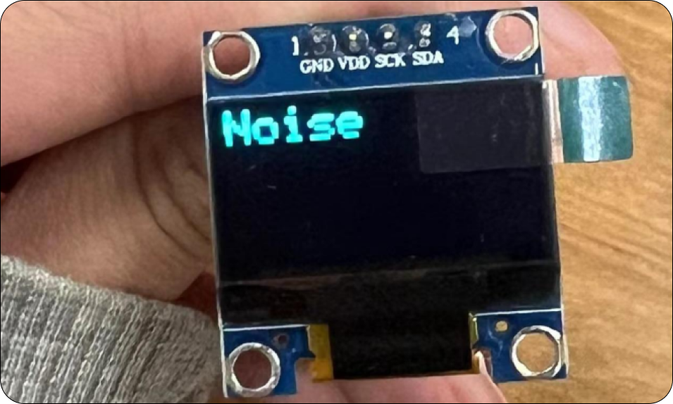
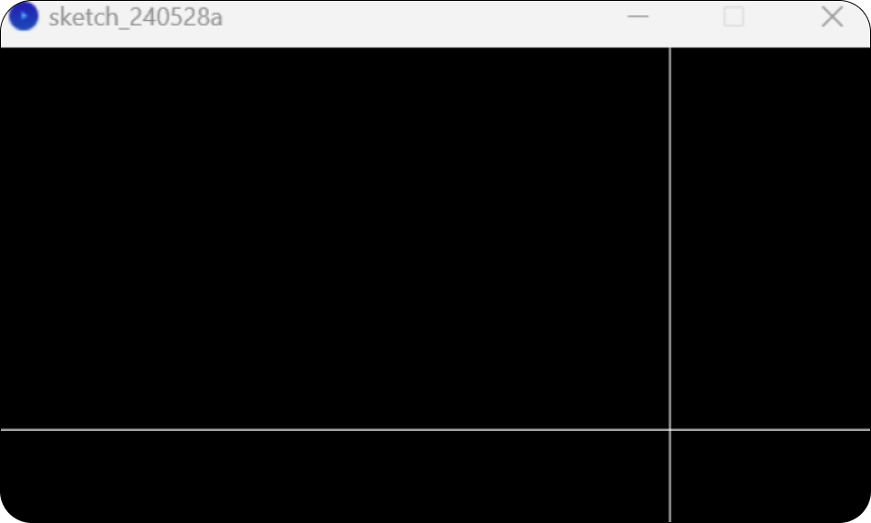
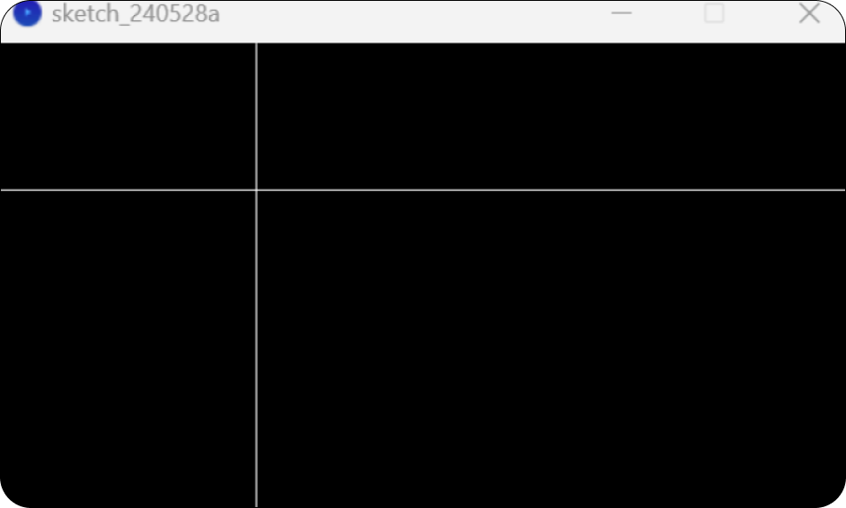

BBST
Final
Course → Input & Output
1.Class Practice
(Switch controls the twin lights)


Arduino Code

const int LED1=12;
const int LED2=13;
int val=0;
void setup()
{
pinMode(LED1, OUTPUT);
pinMode(LED2, OUTPUT);
pinMode(7, INPUT);
}
void loop(){
val=digitalRead(7);
if(val==HIGH)
{
digitalWrite(LED1,HIGH);
digitalWrite(LED2,LOW);
}
else
{
digitalWrite(LED2,HIGH);
digitalWrite(LED1,LOW);
}
delay(1000);
}
const int LED2=13;
int val=0;
void setup()
{
pinMode(LED1, OUTPUT);
pinMode(LED2, OUTPUT);
pinMode(7, INPUT);
}
void loop(){
val=digitalRead(7);
if(val==HIGH)
{
digitalWrite(LED1,HIGH);
digitalWrite(LED2,LOW);
}
else
{
digitalWrite(LED2,HIGH);
digitalWrite(LED1,LOW);
}
delay(1000);
}
Components:：Nano board；LED lights；Expansion board；DuPont Line
Implementation effect：Through switch control, achieve interactive changes in lighting.
Implementation effect：Through switch control, achieve interactive changes in lighting.
2.Class Practice
(Ultrasonic distance light interaction)


Arduino Code
Components:：
Nano board；LED lights；Expansion board；DuPont Line；ultrasonic
sensor
Implementation effect： By changing the distance through ultrasonic information, the light can be fully lit, with one LED lit and all lights turned off.
Implementation effect： By changing the distance through ultrasonic information, the light can be fully lit, with one LED lit and all lights turned off.
3.New interactive device
(
Noise display screen
)

Arduino Code
Components:：
Nano board；Expansion board；DuPont Line；LED display screen；Sound
sensor
Implementation effect： Display the data from the sound sensor on the LED screen.
Implementation effect： Display the data from the sound sensor on the LED screen.
Implementation effect
：Input noise decibel data through Arduino and sound sensor, and then
pass the data into processing through the
serial port
. The louder the noise, the more red the screen colour. The smaller the
noise, the greener the screen colour.
4.Classroom practice
(
processing Diagonal movement
)
5.Processing & Arduino
(
Noise control color change
)


Arduino Code
Int y = 360;
Float x = 640; // Initialise x to screen width
Void setup() {
Size(640, 360); // Set the canvas size to 640x360
Stroke(255); // Set the line colour to white
}
Void draw() {
Background(0); // Clear the background and set it to black
Line(0, y, width, y); // Draw a horizontal line from the left edge to the right edge
Y = y - 1; // Move down the position of the horizontal line
If (y < 0) { // if y is less than 0 (that is, it has been moved out of the screen)
Y = height; // reset y to the bottom of the screen
X = width; // reset x to the right side of the screen at the same time
}
If (y >= 0) { // Only draw vertical lines when y is still on the screen
Line(x, 0, x, height); // Draw a vertical line from the top to the bottom
X = y * width/ height; // Move the position of the vertical line to the left
If (x < 0) { // if x is less than 0 (i.e. has been removed from the screen)
X = width; // reset x to the right side of the screen
}
}
}
Float x = 640; // Initialise x to screen width
Void setup() {
Size(640, 360); // Set the canvas size to 640x360
Stroke(255); // Set the line colour to white
}
Void draw() {
Background(0); // Clear the background and set it to black
Line(0, y, width, y); // Draw a horizontal line from the left edge to the right edge
Y = y - 1; // Move down the position of the horizontal line
If (y < 0) { // if y is less than 0 (that is, it has been moved out of the screen)
Y = height; // reset y to the bottom of the screen
X = width; // reset x to the right side of the screen at the same time
}
If (y >= 0) { // Only draw vertical lines when y is still on the screen
Line(x, 0, x, height); // Draw a vertical line from the top to the bottom
X = y * width/ height; // Move the position of the vertical line to the left
If (x < 0) { // if x is less than 0 (i.e. has been removed from the screen)
X = width; // reset x to the right side of the screen
}
}
}
Arduino Code
Void setup() {
Serial.begin(9600); // Initialise serial communication with a baud rate of 9600
}
Void loop() {
Int noiseValue = analogueRead(A0); // Read the value of the noise detector (assuming that it is connected in A0)
Serial.println(noiseValue); // Send noise value to serial port
Delay(10); // Delay a little to prevent data from being sent too fast
}
Serial.begin(9600); // Initialise serial communication with a baud rate of 9600
}
Void loop() {
Int noiseValue = analogueRead(A0); // Read the value of the noise detector (assuming that it is connected in A0)
Serial.println(noiseValue); // Send noise value to serial port
Delay(10); // Delay a little to prevent data from being sent too fast
}
Processing Code
Import processing.serial. *;
Serial myPort; // Serial Port Object
Int noiseValue = 0; // Read the noise value
Void setup() {
Size(800, 600); // Set the canvas size
String portName = Serial.list()[0]; // Get the first useable serial port
myPort = new Serial(this, portName, 9600); // Initialise the serial port with a baud rate of 9600
myPort.bufferUntil('\n'); // Set the buffer until a line break is encountered
Background(255); // Initialise the canvas colour to white
}
Void draw() {
If (myPort.available() > 0) { // Check if there is any available data
String inData = myPort.readStringUntil('\n'); // Read the data until the line break is encountered
noiseValue = Integer.parseInt(inData); // Convert the read string to an integer
// Calculate the colour according to the noise value
Int red = map(noiseValue, 0, 1023, 255, 0); // Assume that the range of the noise detector is 0-1023, mapped to red 0-255
Int green = map(1023 - noiseValue, 0, 1023, 255, 0); // The smaller the noise, the deeper the green
Int blue = 0; // keep blue at 0
// Set the background colour
Background(red, green, blue);
}
}
Serial myPort; // Serial Port Object
Int noiseValue = 0; // Read the noise value
Void setup() {
Size(800, 600); // Set the canvas size
String portName = Serial.list()[0]; // Get the first useable serial port
myPort = new Serial(this, portName, 9600); // Initialise the serial port with a baud rate of 9600
myPort.bufferUntil('\n'); // Set the buffer until a line break is encountered
Background(255); // Initialise the canvas colour to white
}
Void draw() {
If (myPort.available() > 0) { // Check if there is any available data
String inData = myPort.readStringUntil('\n'); // Read the data until the line break is encountered
noiseValue = Integer.parseInt(inData); // Convert the read string to an integer
// Calculate the colour according to the noise value
Int red = map(noiseValue, 0, 1023, 255, 0); // Assume that the range of the noise detector is 0-1023, mapped to red 0-255
Int green = map(1023 - noiseValue, 0, 1023, 255, 0); // The smaller the noise, the deeper the green
Int blue = 0; // keep blue at 0
// Set the background colour
Background(red, green, blue);
}
}
Implementation effect：
It realises the movement of the two lines from the bottom right to the
top left, and the intersection of the two lines has always been
diagonally.
BSST Team | ZWU
2024.6
// Define the pin of LED
Const int LED1 = 12;
Const int LED2 = 13;
// Define ultrasonic sensor pins
#Define TrigPin A0
#Define EchoPin A1
// Initialise variables
Int val = 0; // Variables used for buttons, but not used in this example
Long duration;
Int thresholdDistance = 500; // Set the threshold distance, 500 mm
Void setup() {
// Set the LED pin as the output
pinMode(LED1, OUTPUT);
pinMode(LED2, OUTPUT);
// Set the pin of the ultrasonic sensor
pinMode(TrigPin, OUTPUT);
pinMode (EchoPin, INPUT);
// Initialise the ultrasonic sensor pin
digitalWrite(TrigPin, LOW);
Delay(1);
// It is assumed that the button is not used here, so annotate the code related to the button.
// pinMode(7, INPUT); // If you want to use the button, please cancel the comment
}
Void loop() {
// Read the ultrasonic distance
Long distance = getDistance();
// Control the LED according to the distance
If (distance <= thresholdDistance) {
digitalWrite(LED1, HIGH); // LED1 lights up when the distance is less than or equal to the threshold
digitalWrite(LED2, LOW); // LED2 turns off
} else {
digitalWrite(LED1, LOW); // When the distance is greater than the threshold, LED1 turns off
digitalWrite(LED2, HIGH); // LED2 lights up
}
// Send the distance value through serial communication (optional)
Serial.print("Distance: ");
Serial.println(distance);
// Delay to avoid reading and sending data too quickly
Delay(1000);
}
// Get the function of ultrasonic distance
Long get Distance() {
// Send an ultrasonic pulse
digitalWrite(TrigPin, LOW);
delayMicroseconds(2);
digitalWrite(TrigPin, HIGH);
DelayMicroseconds(10);
digitalWrite(TrigPin, LOW);
// Read the echo time
Duration = pulseIn(EchoPin, HIGH); // Unit: microseconds
// Calculate the distance and return (unit: millimetres)
// Note: It is assumed that the speed of sound at a temperature of 20°C may need to be adjusted in actual use.
Return duration * 0.0343 / 2; // The speed of ultrasound in 20°C air is about 343m/s, that is 0.0343mm/us
}